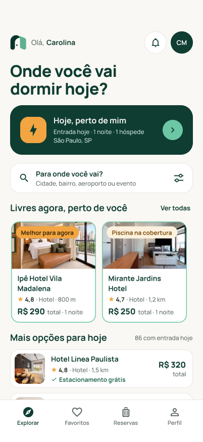
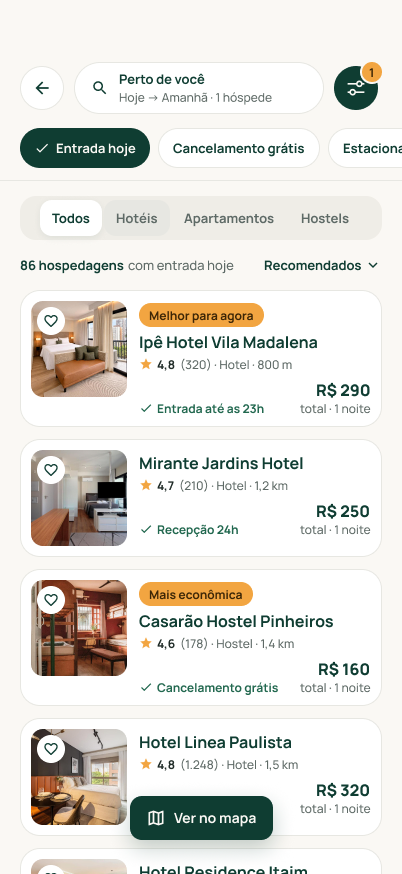
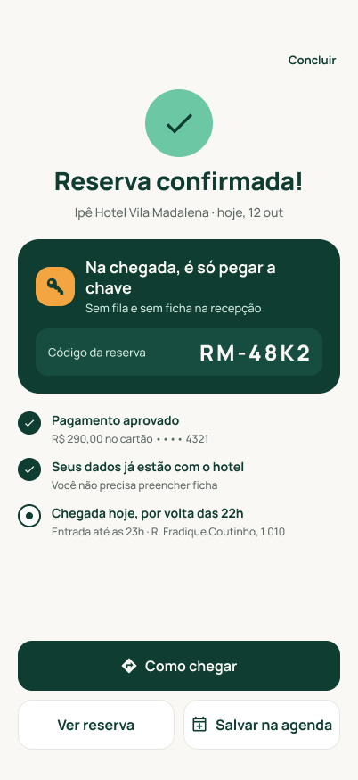
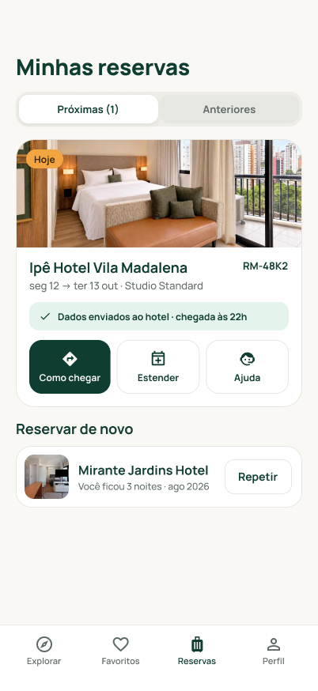

Roomio
Do desembarque ao quarto, sem planejamento e sem surpresas.
Um app de reserva de hotéis para quem precisa de hospedagem para hoje, em poucos minutos, muitas vezes já no destino.


Da pesquisa em grupo ao produto, conduzido por mim
O Roomio começou como um case de UX em grupo, com Laila Begulo, Marylene Guedes e Sarah Rothschild. Da síntese da pesquisa ao protótipo final, conduzi o projeto sozinho.
- Aprofundei o problem statement
- Criei o questionário quantitativo (70 respostas)
- Conduzi a entrevista em profundidade com o Cleber, do roteiro à análise
- Síntese da pesquisa, proposta de valor e briefing do produto
- Jornada do hóspede em 9 etapas e arquitetura das telas
- Direção visual: paleta, tipografia e ícones
- UI, design system e protótipo navegável no Figma
IA generativa como ferramenta de produção, para acelerar a criação das telas. O problema, os critérios e cada decisão de interface foram meus.
Entre o desembarque e o táxi
Imagine chegar numa cidade sem reserva: cansaço, pressa e o celular na mão. É nesse momento que alguém abre um app de hospedagem e precisa decidir rápido, sem conseguir ver o hotel antes.
A pergunta de partida foi: o que faz essa decisão ser tão difícil, e o que acontece depois que ela é tomada? Para responder, combinamos dados quantitativos com entrevistas em profundidade.
70 viajantes, um padrão claro
Criei um questionário online para medir o tamanho do problema: com que frequência as pessoas viajam, se já reservaram em cima da hora e como escolhem onde ficar.
Os números diziam o quê. As pessoas disseram por quê.
Três entrevistas semiestruturadas com viajantes de perfis diferentes. Conduzi a do Cleber do começo ao fim.
O total escondido atrás da diária parece pegadinha.
- Estacionamento prometido que não existia
- Suporte espalhado entre app, WhatsApp e e-mail
- Desiste de hotéis com poucas avaliações
- 40 minutos de fila no check-in
- Filtra por self check-in e cancelamento grátis
- Salva opções para comparar depois
- Acha desnecessário preencher ficha na recepção
- Já ficou em região insegura por não poder escolher
- Procura avaliações sobre limpeza
- Reserva 1 noite para testar e depois estende
- Chega de madrugada, sem recepção 24h
- Se preocupa com acessibilidade e segurança
O problema não é achar hotel. É confiar nele.
- Padrão 01DesconfiançaO que a plataforma mostra nem sempre bate com a realidade.
- Padrão 02Comparação em várias fontesVários apps abertos para conferir preço e avaliações.
- Padrão 03Contato direto com o hotelLiga ou manda mensagem para confirmar antes de ir.
- Padrão 04Reserva curta para testarReserva 1 noite e estende se gostar.
Como ajudar quem tem pressa a reservar uma hospedagem confiável em poucos minutos e chegar só pegando a chave?
Quatro princípios, cada um com origem
Transformei cada dor em uma regra de design. Toda tela do Roomio foi checada contra esses quatro princípios.
- Vem de: CleberPreço total sempreTotal com taxas em todo card e na barra de reserva. A diária vira texto de apoio, nunca o contrário.
- Vem de: o momento de pressaMenos telas, mais sheetsFiltros, quarto e pagamento abrem por cima e devolvem ao mesmo ponto.
- Vem de: Cleber e KéziaInformação verificadaSelo “Confirmado pelo hotel”, avaliações por tema e acessibilidade. Nada prometido que não possa ser garantido.
- Vem de: Adriana e a fila de 40 minDados uma vez sóCadastro mínimo na reserva; o hotel recebe tudo antes da chegada.
Reservar em 4 toques
Desenhei a jornada completa em 9 etapas, da busca à retirada da chave. Para quem já tem conta, o fluxo principal cabe em 4 toques.
- 01“Hoje, perto de mim”Atalho com local, data e 1 noite prontos. Pula o formulário.

02Escolher o hotelSelos como “Melhor para agora” explicam a escolha em uma linha.- 03ReservarQuarto recomendado já selecionado; cancelamento e limpeza visíveis.
 04Pagar e pronto“Cobrança agora. Nada a pagar no hotel.” Dados já enviados.
04Pagar e pronto“Cobrança agora. Nada a pagar no hotel.” Dados já enviados.

Filtros na ordem do que pesa em cima da hora
Entrada hoje e cancelamento grátis primeiro (Adriana), depois self check-in e recepção 24h (Kézia), preço total e acessibilidade confirmada pelo hotel.
Tudo o que pesa, antes de pagar
Avaliações por tema, com limpeza em destaque, e cancelamento em linha do tempo: grátis até 14h, depois a 1ª diária. Nenhuma surpresa depois.
Sem dark patterns
Cleber chamou as plataformas atuais de “poluídas”. Por isso, nada de contador falso de escassez, desconto escondendo o total ou opção pré-marcada.
Cadastro no momento certo, uma vez só
Buscar e ver resultados não pede login, porque para o Cleber criar conta é atrito. Os dados só são pedidos ao reservar e servem também para o check-in expresso.
A experiência continua até a chave
“Gostou? Fique mais uma noite” estende a estadia sem novo check-in, para quem reserva 1 noite para testar, como a Kézia. Suporte, rota e cancelamento ficam num só lugar.


Feito para crescer sem perder consistência
Cores e espaços vêm de variáveis semânticas, e cada componente tem estados de clique, foco, desabilitado e seleção. Acessibilidade foi requisito, não ajuste final.

Colocando os 4 toques à prova
Teste moderado com 5 participantes, no protótipo navegável.
- Tarefa 1Reservar uma hospedagem para hoje[__ toques]média até pagar · [__ s]
- Tarefa 2Achar uma com cancelamento grátis[_ de 5]concluíram sem ajuda
- Tarefa 3Fazer a primeira reserva sem conta[_ de 5]concluíram · trava em: [__]
- Tarefa 4Estender a estadia[_ de 5]encontraram sem procurar
[Principal aprendizado do teste e o que vai mudar no Roomio por causa dele.]
Ainda em aberto: como a chave é retirada na chegada (código, QR ou documento).